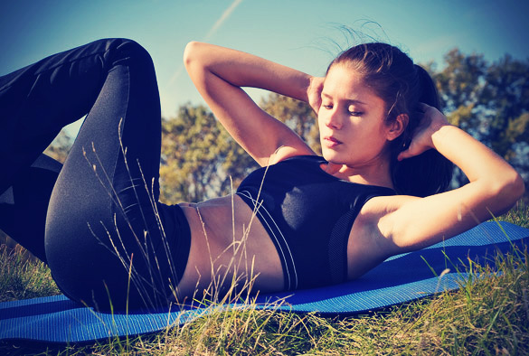
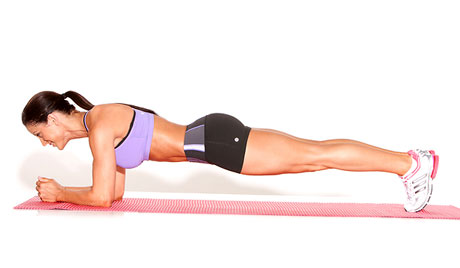
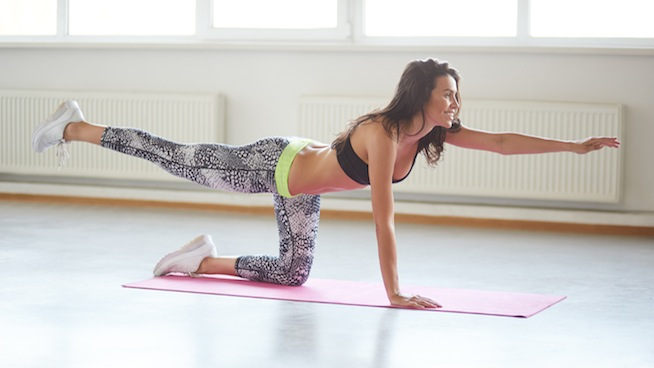
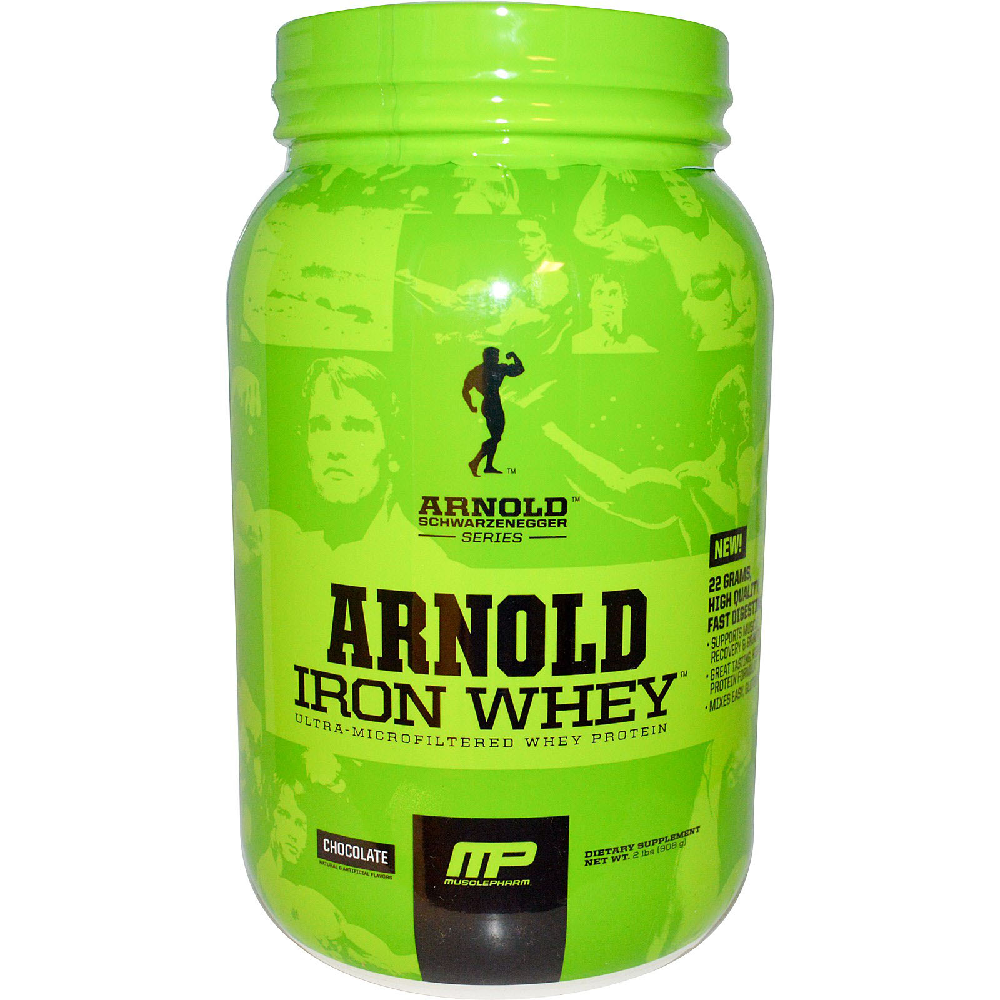
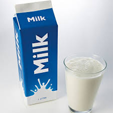
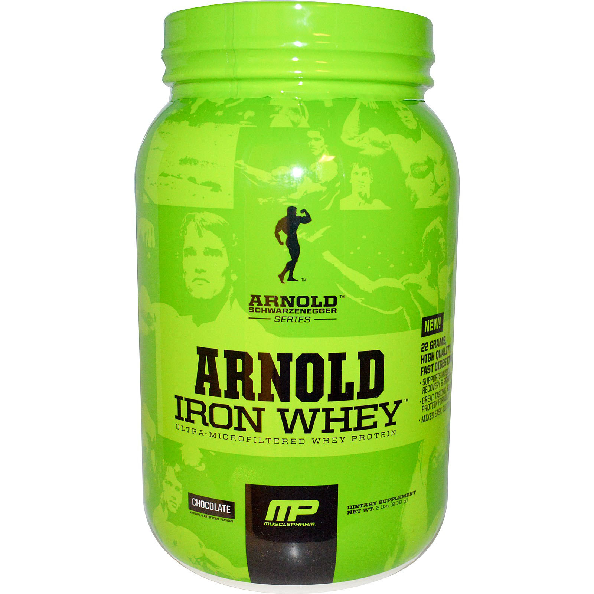
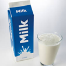

Bicycles
Bicycles
The "bicycle" is one of the best. Lie on your back and "pedal" in the air. Raise one shoulder as
if trying to touch the opposite knee.
Crunches

Crunches
Lie on your back, knees bent and feet flat on the floor. Put your hands behind your head,
elbows facing out.
Front Plank

Front Planks
Lie on your stomach with your forearms on the floor. Keep the elbows bent and under your
shoulders. Use your core muscles to lift your torso and thighs off the floor, tightly contracting
your butt and your abs.
Bird Dogs

Bird Dogs
Kneel on your hands and knees, with your fingers facing forward. Tighten the core muscles,
and raise the right leg until it is parallel with the floor, not higher than the hip.
Bicep Workouts
Barbell Curl
Get a dumbell and curl it up and down and repeat.
EZ Bar Curl
Use a long bar and bring up straight and slowly go back down.
Preacher Curl
Sit on a bench with arms angled down and curl a bar back and forth.
Tricep Workouts
***YOUR TRICEPS MAKE UP 2/3 OF YOUR ARM. TRICEPS ARE BETTER TO WORKOUT
THAN BICEPS***
Skull Crushers
Lay down on a bench and get a bar. Bring it back and forth extending past your head and back
up to starting position.
Dips
Dips are where you grab two bars with nothing under your feet and go up and down using your
triceps to lift you up and down each time.
Tricep Dumbbell Kickback
Crouch on a bench extending the dumbell back each time.
 

Protein is vital to gaining muscle, each time you workout you need to drink protein. A good way to go is drinking a pre workout, then pound a protein shake during, then when you are done drink one after.
Protein replaces muscles that have torn from working out. I prefer Muscle Milk, Arnold whey, or Mtn Ops. All are still good I just prefer those brands. Also, eating different varieties of foods such as meat and
peanut butter or eggs are good sources to gain protein.


Protein is vital to gaining muscle, each time you workout you need to drink protein. A good way to go is drinking a pre workout, then pound a protein shake during, then when you are done drink one after.
Protein replaces muscles that have torn from working out. I prefer Muscle Milk, Arnold whey, or Mtn Ops. All are still good I just prefer those brands. Also, eating different varieties of foods such as meat and
peanut butter or eggs are good sources to gain protein.